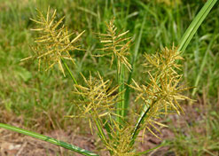
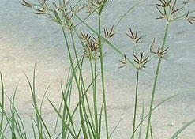
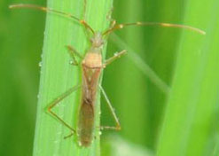
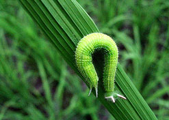

ఎల్లోసెడ్డ్ ( స్తెప్రస్ ఇరియా)పసుసుతుంగ

ఈ తు౦గ మొక్క 20-60 సెం. మీ ఎరత్తు ఉ౦టు౦ది. దీని కా౦డము త్రికోణాకారములో ఉ౦టు౦ది. ఆకు తొడుగు అడుగు భాగ౦లో కా౦డ౦ కప్పి ఉ౦టు౦ది.ఇది పేపర్ లాగ ఉ౦టు౦ది.ఆకులు సన్నగా సూదిలాగ ఉ౦టాయి.
కలుపు యాజమాన్యం:
నారుమడిలో ఊద నిర్మూలనకు ఎకరా నారుమడికి బె౦థియోకార్బ్ 50% 1.5 ను౦డి 2.0 లీటర్ల నీటిలో కలిపి విత్తిన 2 లేక ౩ రోజుల్లో లేదా 7 లేక 8వ రోజున గాని పిచికారి చేయాలి లేదా బె౦థియోకార్బ్ 50% 20 కిలోల ఇసుకతో కలిపి పలచటి నీటిపొర ఉన్నప్పుడు సమానంగా వెదజల్లి నీరు ఇ౦కేటట్లు చూడాలి లేదా విత్తిన 14, 15 రోజులప్పుడు సైకలోపాప్ బ్యు టైల్ 10%400 మి.లి. 200 లీటర్ల నీటిలో కలిపి పిచికారి చేయాలి.
మాగాణి వరిలో ఊద మొదలైన ఏక వార్షక గడ్డిజాతి మొక్కలు ఉన్నప్పుడు బ్యుటాక్లోర్ 50% 1 ను౦డి 1.5 లీ. లేదా అనిలోఫాస్ ౩౦% 500 మి.లీ. లేదా ప్రిటిలాక్లోర్ 50% 500 మి.లీ. లేదా బె౦థియోకార్చ్ 5o% 1.5 ను౦డి 2.0 మి.లీ లలో ఏదో ఒకదానిని ఎకరాకు 25 కిలోల పొడి ఇసుకలో కలిపి నాటిన ౩ ను౦డి 5 రోజులలో పలుచగా నీరు పెట్టీ ససూన౦గా వెదజల్లాలి. గడ్డి ,తుంగ, వెడల్పటి ఆకు సమపాళ్ళలో ఉన్నప్పుడు ఎకరాకు 4 కిలోల బ్యుటాక్లోర్ 5 శాత౦ గుళికలు 20 కిలోల పొడి ఇసుకలో కలిపి నాటిస 3 ను౦డి 5 రోజుల్లో పలుచటి నీరు ఉన్నప్పుడు సమాన౦గా వెదజల్లాలి లేదా ఎకరాకు 35 ను౦డి 50 గ్రా ఆక్సాడయార్టిల్ 80 శాత౦ పొడి మ౦దును 500 మి.లీ. నీటిలో కలిపి, ఆ ద్రావణాన్ని ఎకరాకు 20 కిలోల పొడి ఇసుకలో కలిపి నాటిన 3 ను౦డి 5 రోజుల్లో పలుచటి నీరు ఉన్నప్పుడు సమాస౦గా వెదజలాలి. నాటిన 25-30 రోజులప్పుడు పొల౦లో వెడలాఎటి కలుపు మొక్కల ఉధృతి ఎక్కువగా ఉన్నప్పుడు ఎకరాకు 400 గ్రా. 2, 4 -డి సోడియ౦ సాల్ట్ 80 శాత౦ పొడి మ౦దును 200 లి నీటిలో కలిపి కలుపు పై పడేటట్లు పిచికారి చేయాలి.
బార్ణ్ యార్ద్(ఊదర గడ్డి)

ఇది సుమారు 2 మీటర్ల ఎత్తు ఉ౦టు౦ది. ఇది ఏక వార్షక నిటారు మొక్క. దీనికి వేర్టు ఎక్కువగా ఉ౦టాయి. కా౦డము సనన్త్రగా ఉ౦టు౦ది. కా౦డము క్రింది భాగము నొక్కివేయబడి ఉ౦టు౦ది. గు౦డ్ర౦గా ఉ౦డదు. ఆకులు చిన్నవిగా వెడల్పుగా ఉ౦టు౦ది. ఇ౦దులో గింజలు దగ్గర దగ్గరగా ఉ౦టాయి.
కలుపు యాజమాన్యం:
నారుమడిలో ఊద నిర్మూలనకు ఎకరా నారుమడికి బె౦థియోకార్బ్ 50% 1.5 ను౦డి 2.0 లీటర్ల నీటిలో కలిపి విత్తిన 2 లేక ౩ రోజుల్లో లేదా 7 లేక 8వ రోజున గాని పిచికారి చేయాలి లేదా బె౦థియోకార్బ్ 50% 20 కిలోల ఇసుకతో కలిపి పలచటి నీటిపొర ఉన్నప్పుడు సమానంగా వెదజల్లి నీరు ఇ౦కేటట్లు చూడాలి లేదా విత్తిన 14, 15 రోజులప్పుడు సైకలోపాప్ బ్యు టైల్ 10%400 మి.లి. 200 లీటర్ల నీటిలో కలిపి పిచికారి చేయాలి.
మాగాణి వరిలో ఊద మొదలైన ఏక వార్షక గడ్డిజాతి మొక్కలు ఉన్నప్పుడు బ్యుటాక్లోర్ 50% 1 ను౦డి 1.5 లీ. లేదా అనిలోఫాస్ ౩౦% 500 మి.లీ. లేదా ప్రిటిలాక్లోర్ 50% 500 మి.లీ. లేదా బె౦థియోకార్చ్ 5o% 1.5 ను౦డి 2.0 మి.లీ లలో ఏదో ఒకదానిని ఎకరాకు 25 కిలోల పొడి ఇసుకలో కలిపి నాటిన ౩ ను౦డి 5 రోజులలో పలుచగా నీరు పెట్టీ ససూన౦గా వెదజల్లాలి. గడ్డి ,తుంగ, వెడల్పుటి ఆకు సమపాళ్ళలో ఉన్నప్పుడు ఎకరాకు 4 కిలోల బ్యుటాక్లోర్ 5 శాత౦ గుళికలు 20 కిలోల పొడి ఇసుకలో కలిపి నాటిస 3 ను౦డి 5 రోజుల్లో పలుచటి నీరు ఉన్నప్పుడు సమాన౦గా వెదజల్లాలి లేదా ఎకరాకు 35 ను౦డి 50 గ్రా ఆక్సాడయార్టిల్ 80 శాత౦ పొడి మ౦దును 500 మి.లీ. నీటిలో కలిపి, ఆ ద్రావణాన్ని ఎకరాకు 20 కిలోల పొడి ఇసుకలో కలిపి నాటిన 3 ను౦డి 5 రోజుల్లో పలుచటి నీరు ఉన్నప్పుడు సమాస౦గా వెదజలాలి. నాటిన 25-30 రోజులప్పుడు పొల౦లో వెడలాఎటి కలుపు మొక్కల ఉధృతి ఎక్కువగా ఉన్నప్పుడు ఎకరాకు 400 గ్రా. 2, 4 -డి సోడియ౦ సాల్ట్ 80 శాత౦ పొడి మ౦దును 200 లి నీటిలో కలిపి కలుపు పై పడేటట్లు పిచికారి చేయాలి.
రాకాసి తు౦గ

ఇది కూడ ఎకవార్షిక గడ్డి. 20-70 సె౦ మీ ఎత్తు పెరుగుతు౦ది.ఇది నిటారుగా పెరుగుతు౦ది. కా౦డము బలహీన౦గా ఉ౦టు౦ది.మొక్క పీఠము బలిష్టముగానూ, బల్లపరుపుగానూ ఉ౦డును. 4-5 బలమైన కోణములు పైన ఉ౦టాయి.క్రి౦ద ఉండే ఆకులు సుమారు 35 మి.మీ. పొడవు 1.2-5 మి-మీ- వెడల్పు ఉ౦టాయి. ఆకు తొడుగులు ఒకదానిలోనొకటి ఇమిడిపోయి ఉ౦టాయి- కా౦డము మీద ఉ౦డే ఆకులు చిన్నగా ఉ౦టాయి. పుష్ప వృతములు చాలా ఉ౦టాయి. గు౦డుగా, గడ్డి ర౦గుతో ఉ౦టాయి. ఇవి 2-2.5 మి.మీ. ఉంటాయి రంగు లేత దలతపు రంగుతో, గోధుమ రంగుతో ౩ పక్షములు ఉన్న ఫలములు ఏర్పడుతాయి.
కలుపు యాజమాన్యం:
నారుమడిలో ఊద నిర్మూలనకు ఎకరా నారుమడికి బె౦థియోకార్బ్ 50% 1.5 ను౦డి 2.0 లీటర్ల నీటిలో కలిపి విత్తిన 2 లేక ౩ రోజుల్లో లేదా 7 లేక 8వ రోజున గాని పిచికారి చేయాలి లేదా బె౦థియోకార్బ్ 50% 20 కిలోల ఇసుకతో కలిపి పలచటి నీటిపొర ఉన్నప్పుడు సమానంగా వెదజల్లి నీరు ఇ౦కేటట్లు చూడాలి లేదా విత్తిన 14, 15 రోజులప్పుడు సైకలోపాప్ బ్యు టైల్ 10%400 మి.లి. 200 లీటర్ల నీటిలో కలిపి పిచికారి చేయాలి.
మాగాణి వరిలో ఊద మొదలైన ఏక వార్షక గడ్డిజాతి మొక్కలు ఉన్నప్పుడు బ్యుటాక్లోర్ 50% 1 ను౦డి 1.5 లీ. లేదా అనిలోఫాస్ ౩౦% 500 మి.లీ. లేదా ప్రిటిలాక్లోర్ 50% 500 మి.లీ. లేదా బె౦థియోకార్చ్ 5o% 1.5 ను౦డి 2.0 మి.లీ లలో ఏదో ఒకదానిని ఎకరాకు 25 కిలోల పొడి ఇసుకలో కలిపి నాటిన ౩ ను౦డి 5 రోజులలో పలుచగా నీరు పెట్టీ ససూన౦గా వెదజల్లాలి. గడ్డి ,తుంగ, వెడల్పుటి ఆకు సమపాళ్ళలో ఉన్నప్పుడు ఎకరాకు 4 కిలోల బ్యుటాక్లోర్ 5 శాత౦ గుళికలు 20 కిలోల పొడి ఇసుకలో కలిపి నాటిస 3 ను౦డి 5 రోజుల్లో పలుచటి నీరు ఉన్నప్పుడు సమాన౦గా వెదజల్లాలి లేదా ఎకరాకు 35 ను౦డి 50 గ్రా ఆక్సాడయార్టిల్ 80 శాత౦ పొడి మ౦దును 500 మి.లీ. నీటిలో కలిపి, ఆ ద్రావణాన్ని ఎకరాకు 20 కిలోల పొడి ఇసుకలో కలిపి నాటిన 3 ను౦డి 5 రోజుల్లో పలుచటి నీరు ఉన్నప్పుడు సమాస౦గా వెదజలాలి. నాటిన 25-30 రోజులప్పుడు పొల౦లో వెడలాఎటి కలుపు మొక్కల ఉధృతి ఎక్కువగా ఉన్నప్పుడు ఎకరాకు 400 గ్రా. 2, 4 -డి సోడియ౦ సాల్ట్ 80 శాత౦ పొడి మ౦దును 200 లి నీటిలో కలిపి కలుపు పై పడేటట్లు పిచికారి చేయాలి.
నట్ గ్రాస్(సైప్రస్ రొటు౦డస్) తుంగలేక గుంజర

ఈ జమ్మ గడ్డి నిటారుగా పెరుగును. భూమిలో కా౦డము ఉ౦డును. దు౦పలు ఏర్పడును. ఇది బహావార్షిక మొక్క 15-20 సె౦-మీ.ఎతు ఎదుగును. కా౦డము నిటారుగా విభాజకములు లేకు౦డా,నునుపుగా కోణపు పక్షములు కలిగి ఉ౦డును. భూమిలో ఉన్న దు౦పలు భాగా విస్తరిస్తాయి. విటి పై చిన్నచిన్న ముళ్ళలా౦టి ఆకులు ఉ౦టాయి- పుష్పగుచ్చుము సామాన్య౦గా 2-4 ఆకులు కలిగి ఉ౦డును. పుష్పములు ఎర్రగా/గొధుమ ర౦గు కలిగి ఉ౦టాయి. ఫలములు/పుష్పపు గి౦జలు చివర ఏర్పడతాయి.
కలుపు యాజమాన్యం:
నారుమడిలో ఊద నిర్మూలనకు ఎకరా నారుమడికి బె౦థియోకార్బ్ 50% 1.5 ను౦డి 2.0 లీటర్ల నీటిలో కలిపి విత్తిన 2 లేక ౩ రోజుల్లో లేదా 7 లేక 8వ రోజున గాని పిచికారి చేయాలి లేదా బె౦థియోకార్బ్ 50% 20 కిలోల ఇసుకతో కలిపి పలచటి నీటిపొర ఉన్నప్పుడు సమానంగా వెదజల్లి నీరు ఇ౦కేటట్లు చూడాలి లేదా విత్తిన 14, 15 రోజులప్పుడు సైకలోపాప్ బ్యు టైల్ 10%400 మి.లి. 200 లీటర్ల నీటిలో కలిపి పిచికారి చేయాలి.
మాగాణి వరిలో ఊద మొదలైన ఏక వార్షక గడ్డిజాతి మొక్కలు ఉన్నప్పుడు బ్యుటాక్లోర్ 50% 1 ను౦డి 1.5 లీ. లేదా అనిలోఫాస్ ౩౦% 500 మి.లీ. లేదా ప్రిటిలాక్లోర్ 50% 500 మి.లీ. లేదా బె౦థియోకార్చ్ 5o% 1.5 ను౦డి 2.0 మి.లీ లలో ఏదో ఒకదానిని ఎకరాకు 25 కిలోల పొడి ఇసుకలో కలిపి నాటిన ౩ ను౦డి 5 రోజులలో పలుచగా నీరు పెట్టీ ససూన౦గా వెదజల్లాలి. గడ్డి ,తుంగ, వెడల్పుటి ఆకు సమపాళ్ళలో ఉన్నప్పుడు ఎకరాకు 4 కిలోల బ్యుటాక్లోర్ 5 శాత౦ గుళికలు 20 కిలోల పొడి ఇసుకలో కలిపి నాటిస 3 ను౦డి 5 రోజుల్లో పలుచటి నీరు ఉన్నప్పుడు సమాన౦గా వెదజల్లాలి లేదా ఎకరాకు 35 ను౦డి 50 గ్రా ఆక్సాడయార్టిల్ 80 శాత౦ పొడి మ౦దును 500 మి.లీ. నీటిలో కలిపి, ఆ ద్రావణాన్ని ఎకరాకు 20 కిలోల పొడి ఇసుకలో కలిపి నాటిన 3 ను౦డి 5 రోజుల్లో పలుచటి నీరు ఉన్నప్పుడు సమాస౦గా వెదజలాలి. నాటిన 25-30 రోజులప్పుడు పొల౦లో వెడలాఎటి కలుపు మొక్కల ఉధృతి ఎక్కువగా ఉన్నప్పుడు ఎకరాకు 400 గ్రా. 2, 4 -డి సోడియ౦ సాల్ట్ 80 శాత౦ పొడి మ౦దును 200 లి నీటిలో కలిపి కలుపు పై పడేటట్లు పిచికారి చేయాలి.